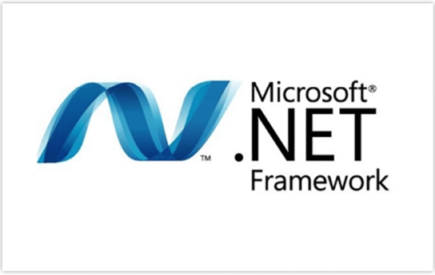
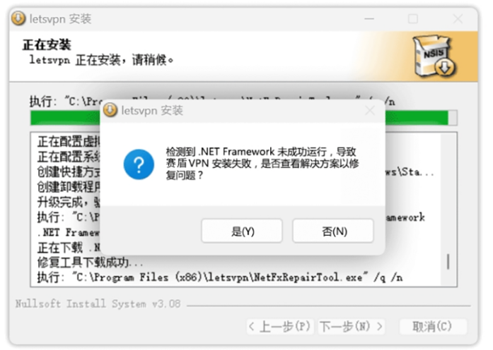
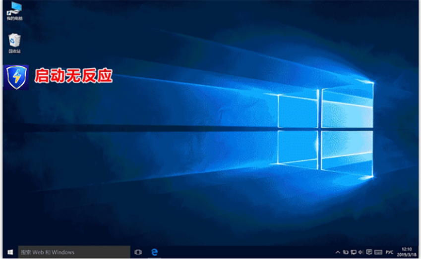
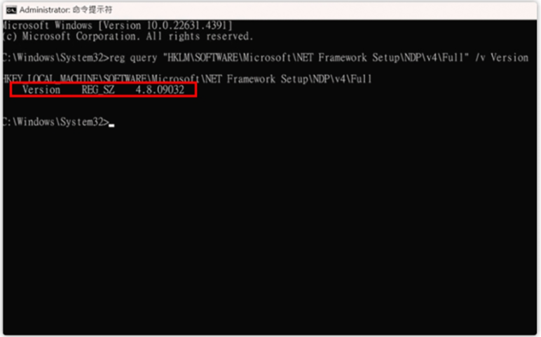
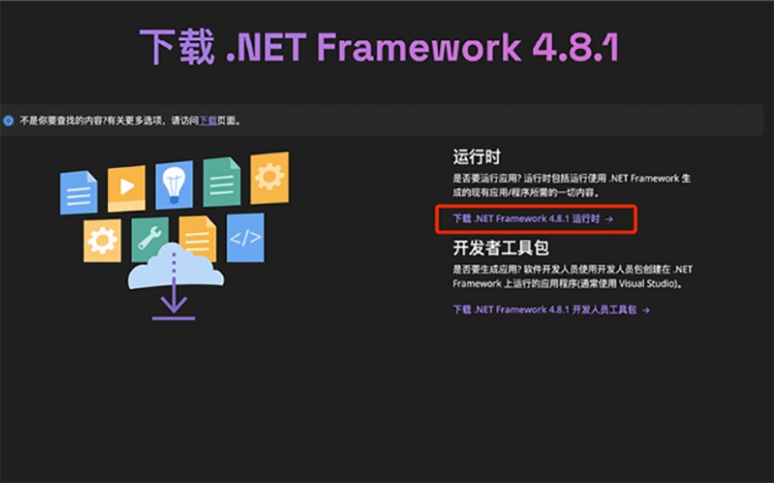
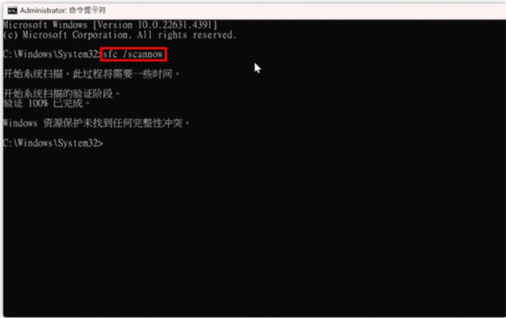
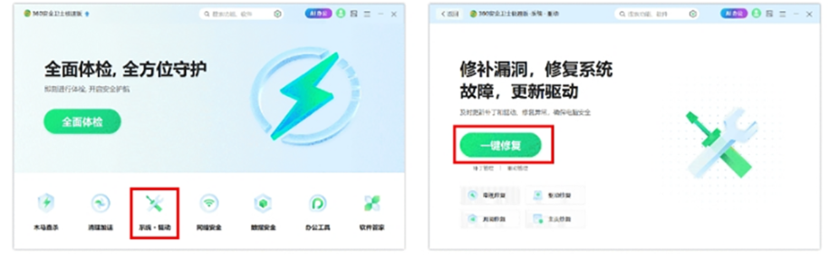
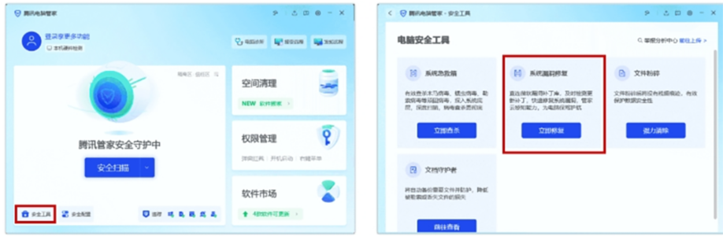

返回
欢迎查看常见问题
智慧服务，让您使用更简单

教您如何解决 .NETFramework 无法运行
.NET Framework 是由微软开发的软件框架，包含了丰富的编程库和运行环境，用于支持 Windows应用的运行。它在系统中扮演着关键的角色，许多Windows 应用依赖.NET Framework 才能正常运行

赛盾 VPN 为什么需要依赖.NETFramework?
赛盾 VPN 的 Windows 版本采用 C# 技术开发需要 .NET Framework 作为基础运行环境。这一框架提供了应用稳定运行的必要支持，包括深度的系统兼容性、网络通讯处理和界面渲染。如果.NET Framework 出现问题，赛盾 VPN 将无法正常工作。
.NET Framework运行失败时的场景
场景-:安装赛盾 VPN 过程报错
在安装赛盾 VPN 的过程中,为确保.NET Framework 处于可用状态，赛盾 VPN 会自动尝试更新并验证.NET Framework 的完整性。如果验证失败，安装过程将弹出如下错误提示

场景二:赛盾 VPN 启动无响应
有时由于 Windows 系统的自动更新或其他原因，.NET Framework 可能被动损坏。在这种情况下，即便赛盾 VPN 已成功安装，也会因.NET Framework 的问题而无法正常启动。

遇到.NET Framework 运行失败时如何修复?
当.NET Framework 出现问题时，可以尝试以下三种方法进行修复:
方法一:手动更新.NET Framework版本至最新版
手动检查并安装最新版本的.NET Framework，修复可能的损坏问题，确保其正常可用性，具体步骤如下:
1.打开命令提示符
按下 Windows +R键，输入 cmd，然后按Enter
输入以下命今来查询 NET Fraework版木号
reg query "HKLM\SOFTWARE\Microsoft\NET Framework Setup\NDP\v4\Full" /v Version
3.检查输出结果，确认当前版本(最新版本为4.8.1)
a.若低于 4.8.0 版本请参考后续步骤更新
b.若已是 4.8.0 或 4.8.1 版本请参考其他方法

4.在浏览器中访问微软.NET Framework 下载页面
·下载.NET Framework 4.8.0免费官方下载
·下载.NET Framework 4.8.1免费官方下载
5.点击下载 .NET Framework 运行时，并手动安装
由于系统兼容性问题，建议您优先安装 4.8.0版本
若问题仍未解决，可尝试升级至 4.8.1版本
6.安装成功后重新启动计算机，查看赛盾 VPN是否能够正常运行

方法二:使用系统命令 sfc /scannow 修复.NET Framework
sfc /scannow是Windows 系统自带的系统修复命令，可安全地扫描并自动修复受损的系统文件，包括 .NET Framework 相关文件，以确保系统的正常运行。具体步骤如下
1.打开命令提示符
按下 Windows +R键，输入 cmd，然后按Enter
2.在命令提示符窗口中输入以下命令sfc /scannow
1.等待系统文件扫描和修复完成
2.重新启动计算机，查看赛盾 VPN 是否能够正常运行

方法三:使用第三方电脑管家进行系统修复
在 Windows 系统中，第三方电脑安全管家工具也可用于检测和修复系统问题，可能会包含对.NET Framework 故障的检测与修复。
以下以 360 安全卫士和 QQ 电脑管家为例，查看系统修复的方法。如果您正在使用其他工具，也可以查阅相关帮助或联系其客服获得支持。
1.360 安全卫士系统修复(图为示意，不同版本位置、名称可能有所差异)

2.QQ 电脑管家系统修复(图为示意，不同版本位置、名称可能有所差异)

如以上三种方法仍无法解决问题，您可以随时联系右下角在线客服。我们会安排专业技术团队提供一对一的远程支持服务，协助您排查并解决相关问题。
注:若您在下载和使用过程中有任何问题，您随时可以发送邮件给 {{kfEmail}}，将由专业的客户服务人员帮助您获取到最新版本的软件。